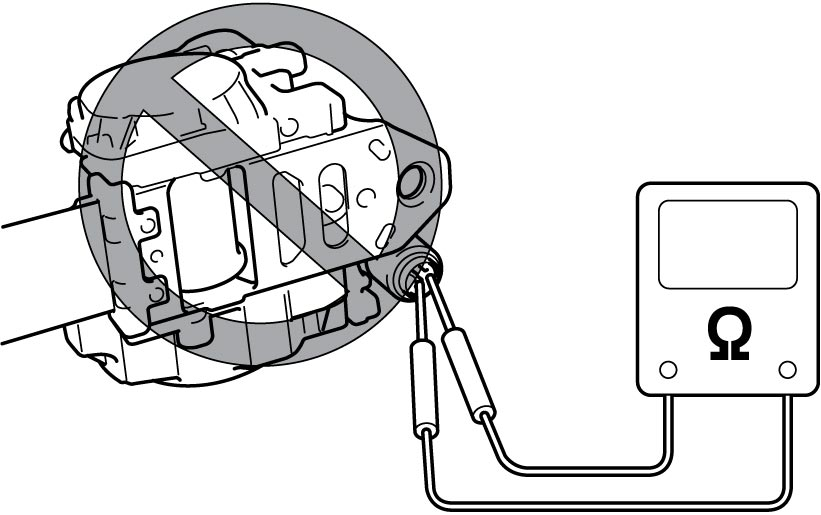
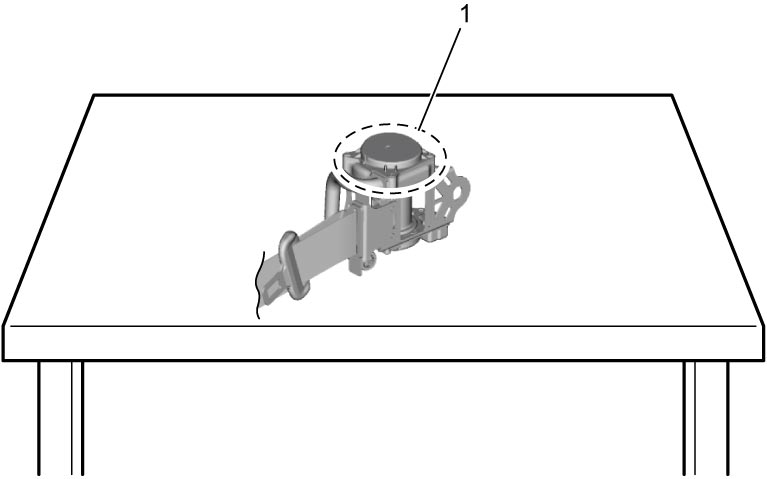
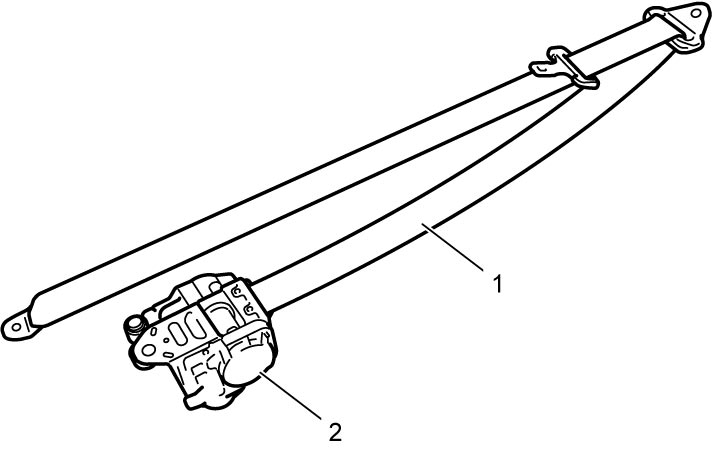

8A
| Rear Seat Belt Assembly Inspection |
Seat belts and attaching parts can affect the vital components and systems of vehicle.
Therefore, they should be checked carefully and replaced with genuine parts only.
4, 8 or 9-Channel Air Bag System
Webbing
Check that webbing is not damaged.
Retractor
•Check that retractor locks webbing when pulled quickly.
•Check that retractor locks its webbing when tilted forward and backward, and leftward and rightward.
•Check that retractor locks its webbing when tilted forward and backward, and leftward and rightward.
11-Channel Air Bag System
Failure to take proper precautions when servicing seat belt components or attempting to disassemble or repair the seat belt pretensioner may cause personal injury.
•Never measure the resistance of a seat belt pretensioner with a tester. Electric current from the tester may trigger activation of the seat belt pretensioner.
 •When placing a live seat belt pretensioner on a workbench or other flat surface, check that the pretensioner’s exhaust hole side faces (1) upward.
•When placing a live seat belt pretensioner on a workbench or other flat surface, check that the pretensioner’s exhaust hole side faces (1) upward.
•Do not put anything on the exhaust hole side of a live seat belt pretensioner. Also avoid placing one live seat belt pretensioner on top of another.

 "Expand image")
•Do not put anything on the exhaust hole side of a live seat belt pretensioner. Also avoid placing one live seat belt pretensioner on top of another.

 "Expand image")
NOTICE:
If a seat belt pretensioner is dropped, it may not work normally.
If a seat belt pretensioner is dropped, replace both the seat belt and buckle with a new replacement set.
Webbing
Check that webbing is not damaged.
Seat belt pretensioner
1)Check the following points.
•Let the seat belt retract fully to check its smooth retraction.
•Retractor should lock webbing when pulled quickly.
•Retractor should lock its webbing when tilted forward and backward, and leftward and rightward.
•Retractor should lock webbing when pulled quickly.
•Retractor should lock its webbing when tilted forward and backward, and leftward and rightward.
2)Replace seat belt assembly with new one if any of the following symptom is found.
•Pretensioner has activated.
•There is a crack in seat belt pretensioner (retractor).
•Seat belt pretensioner (retractor) is damaged or a strong impact (e.g. dropping) was applied to it.
•There is a crack in seat belt pretensioner (retractor).
•Seat belt pretensioner (retractor) is damaged or a strong impact (e.g. dropping) was applied to it.

 "Expand image")
| 1. | Webbing | 2. | Seat belt pretensioner |